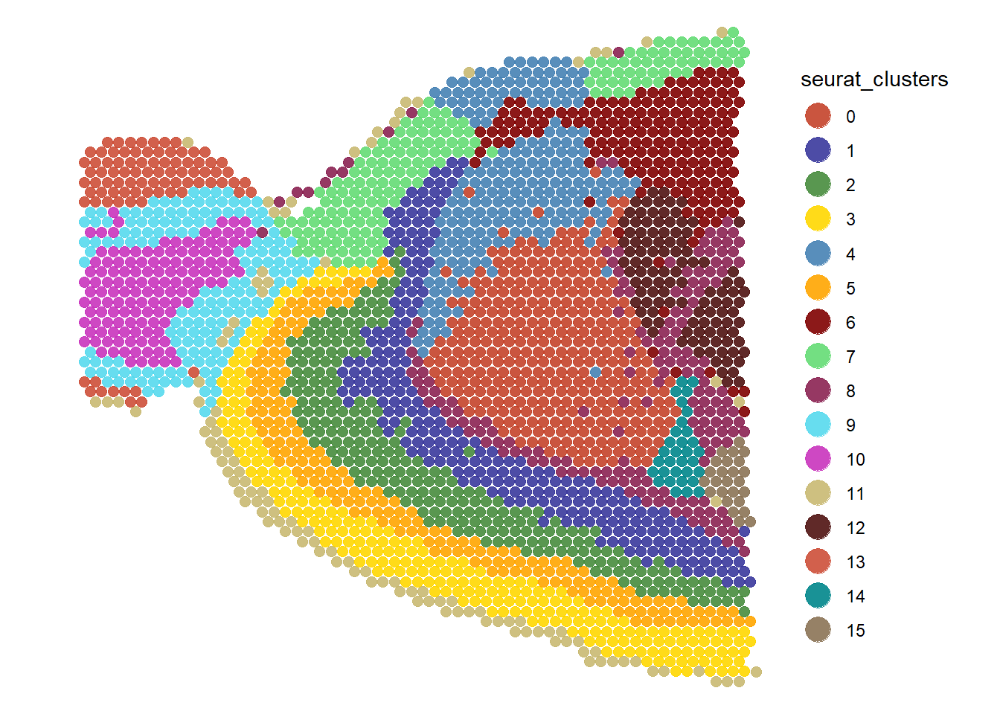

Descriptive Statistics
spata-v2-plotting-descriptive-statistics.Rmd1. Introduction
Gene- and gene-set expression as well as numeric features are continuous variables whose distribution within the sample or/and across subgroups is often of interest. A convenient way to plot descriptive statistic related plots like boxplots, histograms or violinplots is provided by respectively named functions. These functions display the value distribution of numeric variables for the whole sample or in a comparative manner if argument across is specified.
# load packages
library(SPATA2)
library(tidyverse)
spata_obj <- loadSpataObject("data/spata-obj-mca.RDS")
plotSurface(object = spata_obj, color_by = "seurat_clusters")
Throughout this example we are going to visualize some differential gene expression results of the mouse cortex sample (see Figure 1.1).
cluster_of_interest <- c("2", "3", "5")
genes_of_interest1 <- getDeaGenes(object = spata_obj,
across = "seurat_clusters",
across_subset = cluster_of_interest,
n_highest_lfc = 1 # return the top 1 gene for every group
)
genes_of_interest3 <- getDeaGenes(object = spata_obj,
across = "seurat_clusters",
across_subset = cluster_of_interest,
n_highest_lfc = 3 # return the top 3 genes for every group
)
# output
genes_of_interest1## 2 3 5
## "mt-Nd1" "Nrgn" "Tmem132a"
genes_of_interest3## 2 2 2 3 3 3 5
## "mt-Nd1" "mt-Nd2" "Cplx1" "Nrgn" "Camk2n1" "Cnr1" "Tmem132a"
## 5 5
## "R3hdm2" "Phf24"2. Densityplots, Ridgeplots and Histograms
These three plot types are well suited to visualize the distribution of numeric variables throughout the whole sample. As with any other plotting function: If the argument across is not specified no comparison is taking place and every variable gets it’s own plot.
plotHistogram(object = spata_obj, variables = genes_of_interest3)Figure 2.1 Basic histogram
plotDensityplot(object = spata_obj, variables = genes_of_interest3, alpha = 0.85)Figure 2.2 Basic densityplot
plotRidgeplot(object = spata_obj, variables = genes_of_interest3)Figure 2.3 Basic ridgeplot
In order to compare the distribution of certain variables across discrete features (such as clusters or spatial segmentation) use argument ‘across’.
plotRidgeplot(object = spata_obj,
variables = genes_of_interest3,
across = "seurat_clusters",
across_subset = cluster_of_interest) +
legendTop()Figure 2.4 Ridgeplot used to compare distribution across clusters
3. Box- and Violinplots
plotBoxplot() and plotViolinplot() allow for statistical tests such as t-test or ANOVA.
plotBoxplot(object = spata_obj,
variables = genes_of_interest1,
across = "seurat_clusters",
across_subset = cluster_of_interest,
test_groupwise = "anova"
) +
legendTop()
Figure 3.1 Boxplot with ANOVA
plotViolinplot(object = spata_obj,
variables = genes_of_interest1,
across = "seurat_clusters",
across_subset = cluster_of_interest,
test_pairwise = "t.test",
ref_group = "2",
step_increase = 0.1
) +
legendTop()Figure 3.2 Violinplot with t-Test
4. Barcharts
To display discrete variables use plotBarchart().
getFeatureNames(object = spata_obj, of_class = "factor")## factor factor factor
## "Spatial_snn_res.0.8" "seurat_clusters" "Leiden_UMAP"
plotBarchart(object = spata_obj,
variables = c("seurat_clusters", "Leiden_UMAP"),
position = "stack"
)
Figure 4.1 Basic barchart
Using the across-argument you can do comparison for discrete variables as well.
# position set to stack -> counts
plotBarchart(object = spata_obj,
variables = "Leiden_UMAP",
across = "seurat_clusters",
position = "stack") +
legendTop()
# position set to fill -> percentage
plotBarchart(object = spata_obj,
variables = "Leiden_UMAP",
across = "seurat_clusters",
position = "fill") +
legendNone()Figure 4.2 Barchart with argument ‘across’ specified
5. Interactive visualization
A more convenient way to quickly plot and save several plots would be to create a spata-data.frame with the variables of interest and to use plotStatisticsInteractive().
spata_df <- getSpataDf(object = spata_obj)
hallmark_gene_sets <- getGeneSets(spata_obj, of_class = "HM")
discrete_features <- getGroupingOptions(object = spata_obj)
joined_df <- joinWith(object = spata_obj_cortex,
spata_df = spata_df,
features = discrete_features,
gene_sets = hallmark_gene_sets)
plotStatistiscInteractive(spata_df = joined_df)
Figure 5.1 The interface of plotStatisticsInteractive()